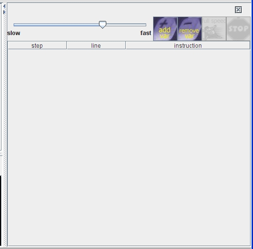
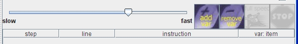

This section will go through how to start up the debugger, how to run it, how to watch variables, and how to step through code one line by one. So basically, everything you need to know about the debugger.
Starting up the debugger
To start up the debugger, either press the 'Watcher' button, or select the 'Watcher' item from the 'Watcher' menu.
 or
or 
You should now see the window below:

How to run it
In order to run the debugger, all you need is to run some code as you normally would, once the debugger is open. But the debugger will only step through code that has been loaded into your editor window, so in order to see the debugger at work, you need to run a function that is defined and loaded in your editor. For example, in your editor, type:
def hello():
print "Hello world!"
You would then invoke the function by typing 'hello()' in the command window, press enter, and viola! You should see this in the debugger window:

Congratulations, you have used the debugger for the first time!
Okay, that was nice, but a debugger is not really useful until
you can see the values of some variables, so lets add some variables to
the program. We are going to use the sumlist program, the code looks
like:
def sumlist(list):
sum = 0
for item in list:
sum = sum
+ item
return sum
This program has three variables: sum, item, and list. We will
watch item and sum. To do this, either press the 'add var' button on
the debugger or 'add variable...' from the debugger menu.

When the dialog appear asking for a variable name, type in the
name of the variable to watch. So in this case, type 'item', and click
OK. You should now see a new column 'var:item' in the table:

Next, do the same for the variable 'sum'. If you want to take
a variable off of the table later, just click 'remove var' or 'remove
variable...' from the debugger menu. A dialog will appear that lets you
choose the variable to remove and then click OK.
Now, that you have added two variables for the debugger to
watch, let's run it! Type this in the command window (remember to load
your program first):
sumlist([4,5,2,1])
Rows should be added to the execution table one by one. Wait
for execution to stop. (You can also change the speed it's going by
moving the slider) When it's finished, you should see this:

As an exercise, please follow each line through the code and
understand how each result was gotten.
While code is running in the debugger, you can hit the stop button at any time to cause execution to halt. Also, at any point, you may move the slider to the left or to the right to effect the speed that the program is running. Moving the slider all the way to the right is full speed, which can also be achieved by pressing the Full Speed button.